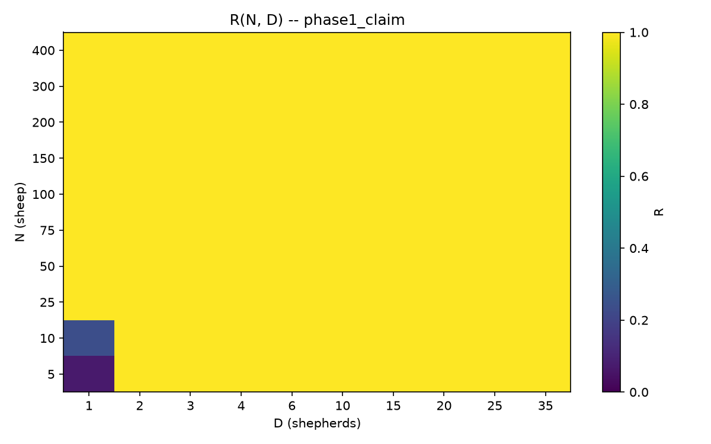
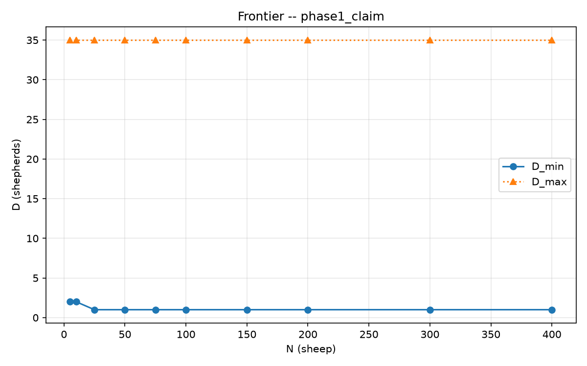
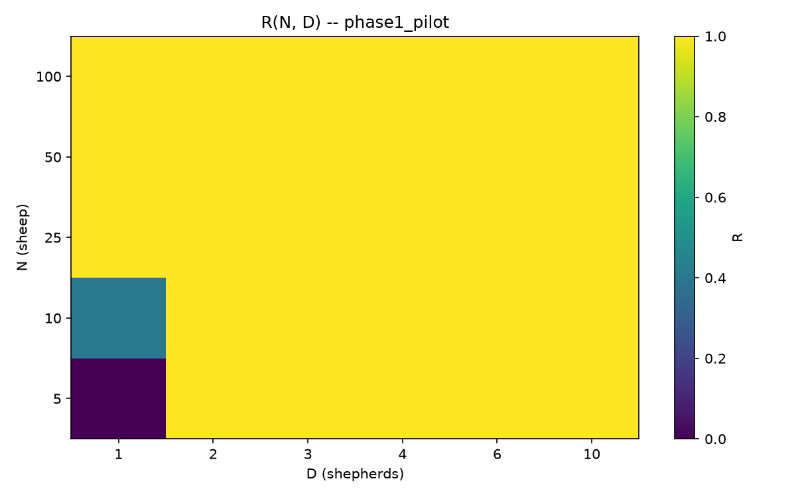
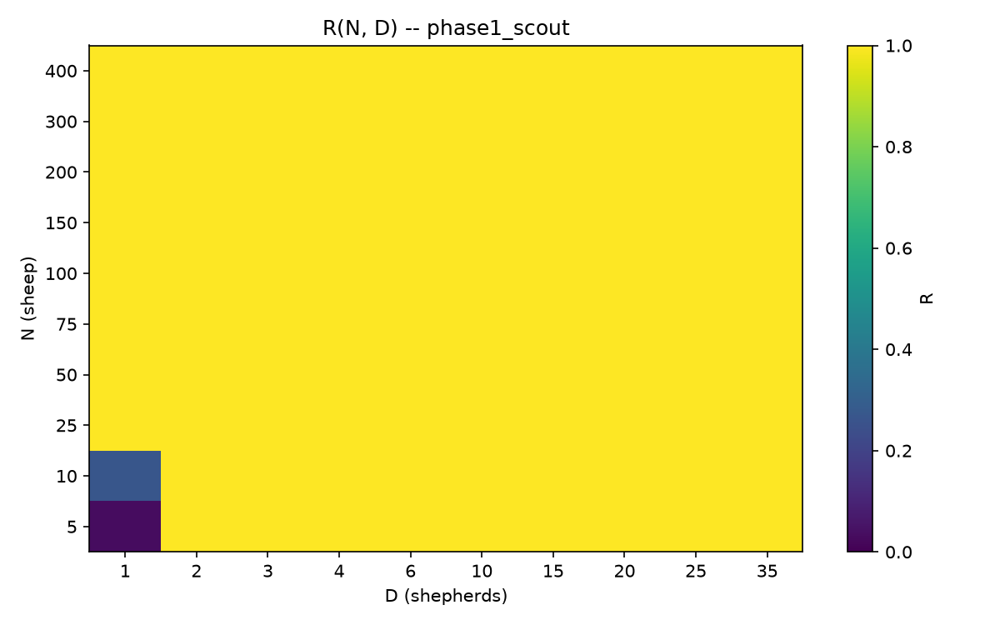
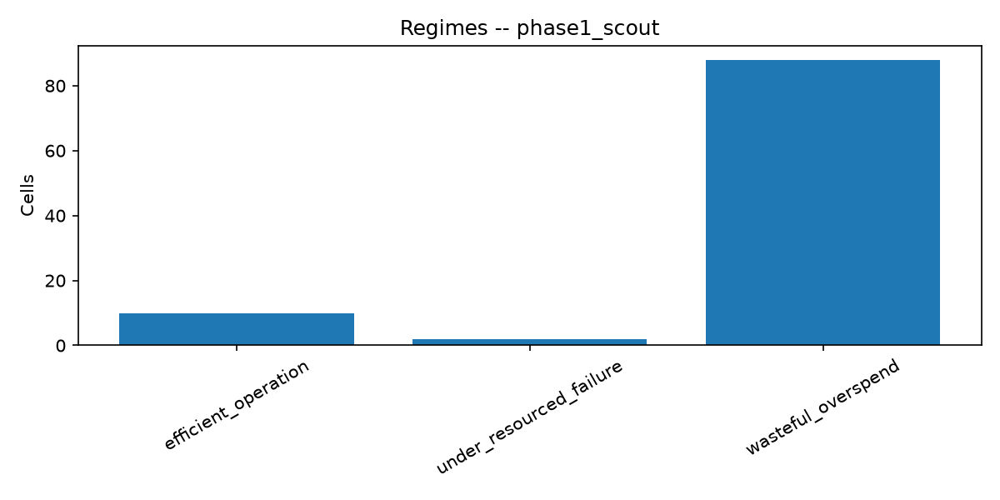

1
Kế hoạchCâu hỏi khoa học
2
Lập trìnhCấu hình + mã
3
Chạy thực tếChiến lược tầng
4
Kết quảSố liệu + hình
Một mạch liên tục để hình dung phần quy mô HerdSim: hỏi gì → khóa thiết kế thế nào → mã và lệnh chạy ra sao → chiến lược đo thế nào → số liệu và biểu đồ nói gì. Viết cho người mới; dùng số thật từ lần chạy 2026-09-22.
Nguồn: scaling/docs/herdsim_research_program.md, main_scaling_plan.md, experiment_run_strategy.md.
HerdSim ở đây là bệ thử (hệ mô hình để đo nhu cầu điều khiển), không phải bản sao đầy đủ nông trại thật. Điều khiển là gián tiếp: vài tác nhân ngoài không ra lệnh từng con cừu một.
| Thuật ngữ | Nghĩa dễ hiểu |
|---|---|
| Độ tin cậy R | Tỷ lệ lần chạy thắng trên các hạt giống đã khóa |
| Nhu cầu điều khiển | Cần bao nhiêu “sức chó” để đạt độ tin cậy đã chọn; đo chính qua vùng quanh số chó tối thiểu / quá tải |
| Số chó tối thiểu | số chó D nhỏ nhất sao cho R ≥ ngưỡng (0,90), trong giao thức cố định |
| Cấu trúc / bố cục khởi đầu | Tổ chức không gian ngoài kích thước: trải, tách, con lạc… |
| Phương pháp | Bộ luật đặt tên cho cách chó quyết định |
| Cơ chế | Quá trình giúp giải thích vì sao mẫu hình xuất hiện (ví dụ chó cản nhau) |
| Giao thức | Luật thí nghiệm đóng băng để so sánh công bằng |
Số chó tối thiểu không phải thuộc tính vũ trụ của đàn: nó phụ thuộc nhiệm vụ, hạn giờ, thông tin, luật thắng, v.v.
| Bậc | Vai trò | Hạt điển hình | Được dùng làm khẳng định? |
|---|---|---|---|
| Thử khói | Kiểm đường ống | lưới nhỏ | Không |
| Trinh sát | Bản đồ rộng; chọn cửa sổ | 30 | Không (chỉ lập kế hoạch / chẩn đoán) |
| Khẳng định | Đo chính xác ô đã chọn | 100 | Có, sau khi có báo cáo vận hành |
Không nâng hình trinh sát thành phán quyết khẳng định.
| Giai đoạn | Hỏi gì | Ghi chú |
|---|---|---|
| 1 (trang này) | Kích thước: R(số cừu, số chó), số chó tối thiểu, có quá tải? | câu hỏi kích thước / gói A |
| 2 | Cùng số cừu, bố cục khác → số chó tối thiểu có đổi? | câu hỏi cấu trúc |
| 3 | Cơ chế (interference, phân mảnh…) | Phân tích trên dữ liệu đã có |
| 4 | Phương pháp khác có cùng pattern? | câu hỏi chuyển giao |
| 5-7 | Thông tin vs chó; khớp quy mô; cảnh báo sớm | Sau lõi |
Không thuộc giai đoạn 1: bố cục khác, phương pháp khác, nhiệm vụ cổng, bản song song NetLogo (xem discuss/phase1.md, notice-meeting.md).
Trước khi vào kế hoạch, nhớ ba từ:
Đậu = mọi con cừu vào vòng đích trước khi hết giờ (10 000 bước).
Rớt = hết giờ chưa xong.
R = số lần đậu / tổng số lần thi ở ô đó
| R | Nghĩa đời thường | Đạt ngưỡng 0,90? |
|---|---|---|
| 0 | Rớt hết | Không |
| 0,4 | Đậu 2 trên 5 | Không |
| 1 | Đậu hết | Có |
Ngưỡng 0,90 = “đáng tin”: đậu ít nhất 9 trên 10 lần. Dưới đó vẫn có thể đôi khi thắng, nhưng chưa ổn định.
Luôn là cùng một phép nhân:
Một ô = một cặp (N, D). Mỗi ô được lặp lại nhiều hạt giống để ước lượng R. Đừng nhầm “số mức D × số hạt” với tổng lần chạy: còn phải nhân thêm số mức N.
Các hình dưới dùng chương tạo bố cục thật (gọn) và tham số giao thức. Chấm xanh lá = cừu. Ô xanh đậm = chó (minh họa gần đàn). Đĩa xanh dương = đích.


Chương trình quy mô HerdSim có nhiều giai đoạn. Giai đoạn 1 chỉ làm bản đồ kích thước:
Nói đời thường: “Càng nhiều cừu thì có cần càng nhiều chó không?”
| Khái niệm trong kế hoạch | Giải thích dễ hiểu |
|---|---|
| Câu hỏi nghiên cứu số 2 / gói A | Bản đồ kích thước: R theo (N, D), tìm số chó tối thiểu |
| Số chó tối thiểu | số chó D nhỏ nhất sao cho R ≥ 0,90 |
| Quá tải | Thêm chó mà R tụt dưới ngưỡng (hai mức D liên tiếp đều kém) |
| Khẳng định C2a / C2b | Hai câu khẳng định cụ thể về quá tải (xem khung ngay dưới) |
| Không thuộc giai đoạn 1 | Đổi bố cục khởi đầu (giai đoạn 2), đổi phương pháp (giai đoạn 4) |
Trong kế hoạch, mỗi “C…” là một khẳng định khoa học có tiêu chí đúng/sai rõ. C2a và C2b thuộc câu hỏi nghiên cứu số 2 (bản đồ kích thước). Chúng nói về quá tải: thêm chó mà tỷ lệ thắng lại kém đi.
Nói đời thường:
Nói đời thường:
Để trả lời C2b phải chạy bước kéo dài giờ (kéo dài giờ): chỉ các ô quá tải, 100 hạt, hạn 20 000 bước.
| C2a | C2b | |
|---|---|---|
| Hỏi gì | Có quá tải trên bản đồ hết giờ chuẩn không? | Quá tải đó có còn kém khi kéo dài giờ không? |
| Cần dữ liệu | Bản đồ R(N,D) ở 10 000 bước | Chạy lại ô quá tải ở 20 000 bước (kéo dài giờ) |
| Trên kết quả này | Không hỗ trợ (không thấy quá tải) | Không áp dụng (không có ô để chạy kéo dài giờ) |
Mã trong kế hoạch: C2a / C2b thuộc câu hỏi kích thước (RQ2); tiêu chí đầy đủ ở main_scaling_plan.md bảng khẳng định.
Tài liệu kế hoạch (trong repo, ngoài thư mục kết quả): scaling/docs/main_scaling_plan.md, scaling/docs/experiment_run_strategy.md, scaling/docs/discuss/phase1.md, scaling/docs/progress_tracker.md.
Các lựa chọn dưới đây nằm trong scaling/configs/canonical_grid.yaml và được giải thích đầy đủ ở scaling/docs/main_scaling_plan.md (mục “Vì sao các giá trị này”). Đây là bản diễn giải tiếng Việt kèm hình, để đọc được “dày quanh 100”, “mịn vùng thấp”, v.v.
Bố cục khởi đầu = cách xếp đàn lúc bắt đầu (gọn / rộng / tách cụm / nhiều con lạc). Giai đoạn 1 khóa chỉ gọn (phân bố chuẩn hẹp, độ lệch chuẩn ≈ 9 khi độ lan = 30).
Bốn bố cục (gọn, rộng, tách, nhiều con lạc) sẽ được so ở giai đoạn 2 trên N ∈ {50, 100, 200}. Không phải giai đoạn 1 bỏ quên; là chia câu hỏi cho rõ.
Nguồn: mục “Vì sao các giá trị này” trong main_scaling_plan.md và canonical_grid.yaml. Giai đoạn 1 chỉ chạy bố cục gọn; các bố cục kia được giải thích đầy đủ ở giai đoạn 2.
| Chọn | Vì sao | Không chọn |
|---|---|---|
| Khóa đúng một bố cục: gọn | Câu hỏi giai đoạn 1 là bản đồ kích thước: R đổi theo số cừu và số chó thế nào. Cố định hình dạng lúc đầu để thay đổi còn lại chỉ đến từ N và D. | Chạy cả bốn bố cục ngay: lẫn hiệu ứng “đàn to hơn” với “đàn lúc đầu méo”. Đó là câu hỏi cấu trúc (giai đoạn 2). |
| Chọn | Vì sao | Không chọn |
|---|---|---|
| độ lan (spread) = 30 | Thước chung của giao thức. Gọn dùng 0,3 × 30; rộng (giai đoạn 2) dùng 2,0 × 30 trên cùng thước. | Đổi độ lan riêng cho giai đoạn 1: mất so sánh với giai đoạn 2 và với hợp đồng bố cục đã khóa. |
| sigma gọn = 0,3 × 30 = 9 | Khớp bán kính đóng chặt khoảng 8 khi N = 50: một đàn đã ghép, “bình thường”, không cố tình méo. Đây là mốc đường cơ sở của cả chương trình. | Sigma ≈ 3: gần một điểm, ít còn đàn. Sigma ≈ 60 (bằng rộng): mất mốc; giai đoạn 1 sẽ đo luôn độ tản, không còn chỉ kích thước. |
| Chọn | Vì sao | Không chọn |
|---|---|---|
| Sân 500 × 500 | Đủ chỗ cho khởi đầu rộng sau này (3 sigma rộng ≈ 180) và con lạc đàn lớn (≈ 174), còn lề khoảng 70. Sân vuông: cụm tách trên vòng tròn không bị ép vào cạnh ngắn. | Sân GUI 150: không chứa khởi đầu rộng / lạc lớn. Sân 400: vẫn chật (~20 thiếu trên đám rộng). Sân 1000: chủ yếu thêm khoảng trống. |
| Tâm đàn (250, 250) | Lề trên/dưới đối xứng. | Đặt lệch góc: mép tường thành yếu tố giả. |
| Tâm đích (370, 250), đường lùa 120 | Ở tốc độ 1, đi thẳng khoảng 120 bước. Chiều dài lùa cố định khi N đổi. Ở N = 400 mép gần đích cách đàn khoảng 78 (ngoài đám gọn). | Đường 80: nằm trong đám rộng. Đường 200: mép xa đích sát tường sân 500. |
| Bán kính đích = 15 · sqrt(N/50) | Tại N = 50 trùng bán kính 15 của app. Nhân căn bậc hai: giữ diện tích theo cừu khi đàn lớn. | Bán kính cố định 8: kẹt khi N lớn. Cố định 30: quá dễ, kéo số chó tối thiểu xuống giả tạo. |
| Chọn | Vì sao | Không chọn |
|---|---|---|
| Bán kính đo = 5 | Trong đàn gọn, hàng xóm thường cách 2–4 nên bán kính 5 nối thành một thành phần. Khe tách (giai đoạn 2) sàn ≥ 10 nên bán kính 5 không nối các cụm tách. | Bán kính 2: xé cả đàn gọn hơi lỏng. Bán kính 15: cầu nối khe tách. |
Giai đoạn 1 không cần vẽ rộng/tách/nhiều lạc, nhưng các số trên đã khóa trong giao thức chung để giai đoạn 2 kế thừa cùng thước. Chi tiết bốn bố cục: báo cáo giai đoạn 2, mục thông số bố cục.
Mười mức N: 5, 10, 25, 50, 75, 100, 150, 200, 300, 400.
“Dày quanh 100” = quanh vùng 100 cừu, các mức nằm gần nhau hơn (50 → 75 → 100 → 150), vì tài liệu dự đoán đây là chỗ “một chó có thể bắt đầu hết đủ” (theo bản nháp bài báo). Cần điểm gần nhau để bắt được chỗ chuyển. Ở đàn rất lớn chỉ cần vài điểm thưa (200, 300, 400) để xem độ dốc, không cần đủ mọi bước 50.
| Lựa chọn | Vì sao (theo kế hoạch) |
|---|---|
| Sàn N = 5 (không bắt đầu từ 20) | Dưới 5 không còn “đàn tập thể”: N=1 không có tương tác cừu-cừu; N=2…4 chuyện 80/20 stubborn thành yếu tố khác; “ngoại vi theo trung vị” gần như mọi con. Giữ 5 và 10 để còn chế độ đàn nhỏ. |
| Có 75 và 150 | Kẹp quanh 100 để định vị chỗ chuyển (một chó bắt đầu hết đủ trong bản nháp). |
| Có 300 và 400 | Cho độ dốc đàn lớn hơn một bước duy nhất. |
| Không có 250, 350 | Mỗi mức N thêm = một vòng quét D đầy đủ (rất đắt). Bước đều 50 từ 50→400 lại quá nhiều điểm so với nhu cầu khớp đường cong hai đoạn. |
| Không chọn số khác tùy ý (ví dụ 7, 33, 999) | Lưới phải đủ để thấy chế độ nhỏ / mép / lớn, nhưng trinh sát còn ~3000 lần. Mười điểm là thỏa hiệp khoa học-ngân sách đã khóa trong protocol. |
Trên kết quả giai đoạn 1 thực tế, số chó tối thiểu gần như phẳng (=1 từ N≥25), nên “chỗ chuyển quanh 100” của bản nháp không hiện trên đường cơ sở HerdSim này. Lưới N vẫn đúng thiết kế để có cơ hội thấy chỗ đó nếu nó xuất hiện.
“Vùng thấp” = số chó nhỏ (1, 2, 3, 4). Đây là chỗ số chó tối thiểu thường nằm, nên cần bước nhảy 1 con một (mịn) để biết số chó tối thiểu là 1 hay 2 hay 3, không bị nhảy cóc.
“Vùng cao” = nhiều chó (6, 10, 15, … 35). Ở đây câu hỏi đổi thành “thêm một cục lớn có giúp hay làm hại?” nên bước có thể thưa hơn (nhảy 4-5-10), không cần mọi số nguyên.
| Lựa chọn | Vì sao |
|---|---|
| 1, 2, 3, 4 liên tiếp | số chó tối thiểu thường nằm đây; cần phân biệt từng con chó. |
| Sau đó 6, 10, 15, 20, 25, 35 | Hỏi tăng mạnh có ích / có hại không; khe 2 chó ở vùng cao nhỏ hơn bước lưới nên không cần mọi số. |
| Trần D = 35 | Đỉnh thang đo của câu chuyện “vài chó” (xem khung bên dưới). |
| Không lấy mọi số nguyên tới 35 | Tránh trinh sát ~10 500 lần; chỉ cần 10 mức D → ~3000 lần (xem phép tính bên dưới). |
Câu chuyện nghiên cứu giai đoạn 1 (câu hỏi kích thước / gói A) là: vài chó dẫn một đàn lớn hơn (điều khiển gián tiếp, không phải mỗi cừu một chó).
35 là mức cao nhất trên lưới: vẫn còn trong khung “một nhóm chó chăn”, chưa thành “đội quân chó”. Lớn hơn (50, 100…) kỹ thuật vẫn chạy được, nhưng không còn đúng câu hỏi chương trình đang đặt ở giai đoạn 1.
Không phải cùng một câu hỏi kéo dài thêm vài mức. Khi số chó lên hàng chục lớn hoặc hàng trăm, đối tượng nghiên cứu đổi: từ nhóm chăn nhỏ điều khiển đàn sang đám đông chó trên sân (hai “đàn” tương tác: cừu và chó).
| Khung D | Câu hỏi khoa học | Vấn đề muốn giải quyết |
|---|---|---|
| 1 … 35 (lưới hiện tại) |
Với một nhóm chó chăn, khi đàn to dần thì số chó tối thiểu và vùng “thêm chó còn ích / bắt đầu hại” đổi thế nào? | Bản đồ nhu cầu điều khiển theo kích thước đàn (câu hỏi kích thước, giai đoạn 1): biên dưới, chế độ vận hành, có/không quá tải trong khung “vài chó”. |
| > 35 (ví dụ 50, 100…) |
Khi số chó trở thành đám đông (gần hoặc lớn hơn nhiều so với “nhóm chăn”), độ tin cậy còn giữ được không? Có sụp vì nhiễu lẫn nhau / chen chúc không? Luật điều khiển còn nghĩa “chăn” hay đã thành “bầy chó bao phủ sân”? | Tìm biên sụp ở D rất cao (nếu có), hoặc nghiên cứu nhiều bộ điều khiển xung đột như một hiện tượng riêng (không còn là câu “cần tối thiểu bao nhiêu chó để chăn đáng tin”). |
giai đoạn 1 lần này: số chó tối thiểu nằm ở 1-2, và không thấy quá tải tới D = 35. Vì vậy trần 35 đã đủ để kết luận trong khung “vài chó”. Nếu sau này muốn chứng minh “cuối cùng luôn có D làm R sụp”, phải mở lưới cao hơn và viết rõ đó là theo dõi biên sụp ở D cực đại, không phải chỉnh nhẹ cùng câu hỏi kích thước.
Lưới hiện tại chỉ có 10 mức D: 1, 2, 3, 4, 6, 10, 15, 20, 25, 35. Không phải đủ dãy 1, 2, 3, …, 34, 35 (35 mức).
| Cách chọn D | Số mức D | Phép tính trinh sát | Số lần chạy |
|---|---|---|---|
| Như hiện tại (10 mức) | 10 | 10 N × 10 D × 30 hạt | 3 000 |
| Mọi số nguyên 1…35 | 35 | 10 N × 35 D × 30 hạt | 10 500 |
Ở vùng D cao, câu hỏi chỉ cần biết “nhảy một cục lớn có đổi R không”, không cần phân biệt D=17 với D=18. Vì vậy:
Hình dung: gần chỗ quan trọng đo từng đơn vị; rất cao chỉ cần vài mốc thưa. Không cần thước từng cm từ 1 đến 35 nếu chỗ quan trọng chỉ nằm ở vài mức đầu và vài mốc cuối.
| Thông số | Giá trị | Vì sao (theo kế hoạch) |
|---|---|---|
| Kích thước sân | 500 × 500 | Sân 150 (GUI) không chứa nổi khởi đầu rộng (3 độ lệch chuẩn ≈ 180) hay con lạc khi N=400 (≈174). Sân 400 còn hụt ~20 ở draw rộng (tường cắt bố cục). Sân 500 còn dư ~70. Sân 1000 chỉ thêm khoảng trống vô ích. Hình vuông: cụm tách trên vòng tròn không bị ép vào cạnh ngắn. |
| Đàn bắt đầu | (250, 250) giữa sân | Lề trên/dưới đối xứng. |
| Tâm đích | (370, 250) | Lệch phải 120 (= drive_length). Chiều dài lùa không đổi khi N đổi. |
| Chiều dài lùa | 120 | Tốc độ 1 → đi thẳng hết ~120 bước. Ở N=400 mép gần đích cách đàn ~78: ngoài đàn gọn và qua một sigma rộng. Dài 80 sẽ nằm trong đám rộng; dài 200 đẩy mép xa đích sát tường sân 500. |
| Bán kính đích | 15 × căn bậc hai(N/50) | Tại N=50: bán kính 15 (như app). Bán kính đóng chặt ~8 → kẹt nếu chỉ 8; 30 thì quá dễ như bãi chăn (kéo số chó tối thiểu xuống giả tạo). Nhân căn bậc hai: giữ diện tích/cừu khi số cừu lớn; bán kính cố định sẽ kẹt ở N=400. |
| Thông số | Giá trị | Vì sao |
|---|---|---|
| Ngưỡng tin cậy | 0,90 (cũng báo 0,50 và 0,70) | Vùng “đáng tin”, cùng mức với bản nháp. 0,50 chỉ báo cáo, không dùng cho số chó tối thiểu. 0,99 với 100 hạt sẽ gọi ô ổn định là “thiếu”. |
| T0 | 10 000 bước | ~80 lần đi thẳng 120 đơn vị; hết giờ ≈ mất kiểm soát. Mặc định scenario 3000 dễ nhầm thắng chậm thành thua. |
| T1 | 20 000 (chỉ ô quá tải) | Tách “cần thêm giờ” khỏi “thêm chó làm tệ”. |
| Hạt trinh sát / khẳng định | 30 / 100 | Ở R=0,90, sai số chuẩn ~0,055 với 30 hạt (đủ tách ô hỏng / vững); ~0,03 với 100 hạt. 10 hạt làm biên nhảy lung tung. 200 chỉ khi khoảng lấy lại mẫu số chó tối thiểu rộng hơn một bước lưới. |
| Phương pháp đường cơ sở | Strombom nhiều chó | Collect/Drive có phối hợp; chuẩn để vẽ bản đồ kích thước trước khi chuyển giao. |
Nguồn phân tích: scaling/docs/main_scaling_plan.md (mục 8 / Vì sao các giá trị này) và chú thích trong scaling/configs/canonical_grid.yaml. Đổi một giá trị đóng băng phải cập nhật cả hai chỗ đó.
Nguồn: main_scaling_plan.md (Cách đo / Biên và chế độ).

| Đại lượng | Định nghĩa | Trên kết quả giai đoạn 1 |
|---|---|---|
| Số chó tối thiểu | D nhỏ nhất trên lưới sao cho R ≥ 0,90 | 2 với N=5,10; 1 với N≥25 |
| Điểm quá tải (D_overcrowd) | D nhỏ nhất > số chó tối thiểu sao cho D đó và D kế tiếp đều R < 0,90 | Không có (trống mọi hàng) |
| D_max | D lớn nhất vẫn ≥ ngưỡng và còn dưới vùng quá tải (hoặc trần lưới nếu không quá tải) | 35 (trần đã thử) |
| Điểm tốt nhất B* | (D, T) đạt ngưỡng với trung vị đường đi ngắn nhất; hòa thì D nhỏ hơn, rồi t_s nhanh hơn | Đúng tại số chó tối thiểu (1 hoặc 2 chó) |
| Thất bại cứng | Không D nào trên lưới đạt R ≥ 0,90 | Không (mọi N đều có số chó tối thiểu) |
| Chế độ | Điều kiện | Số ô giai đoạn 1 |
|---|---|---|
| Thiếu nguồn lực | R < θ và chưa vào vùng quá tải | 2 |
| Hiệu quả | R ≥ θ và đường đi không lãng phí so với B* | 10 |
| Lãng phí | R ≥ θ nhưng đường đi ≥ ~20% trên mức hiệu quả | 88 |
| Sụp vì quá tải | R < θ khi D ≥ điểm quá tải | 0 |
| Thất bại cứng | Không D nào đạt ngưỡng (theo N) | 0 |
Thanh lãng phí mặc định 20%; kế hoạch cũng báo cáo 10% và 30%.
Thành công = mọi cừu trong đĩa đích. Công tắc Collect/Drive của Strombom dùng ngưỡng r_a × N^(2/3), rộng hơn đĩa đích (khoảng 27 vs 15 ở N=50; khoảng 109 vs 42 ở N=400). Kế hoạch không mở đích bằng ngưỡng đó. Vì vậy thất bại Strombom trên nhiệm vụ này không được đọc như “kẹt đóng gói vì đích quá nhỏ theo công tắc Collect”.
Kế hoạch liệt kê độ kết, phân mảnh, con lạc, độ lan, phạm vi, chu vi bao lồi, diện tích bao, mật độ, tỷ lệ trục; cộng I_dir (chó cản hướng nhau) và coverage (phủ cừu ngoại vi). Một số đã có trong timeseries; chỉ số hình dạng mới (chu vi…) phục vụ chiến dịch sau. Không chạy lại giai đoạn 1 chỉ vì thêm metric hình dạng.
Hình dung đường ống như nhà máy: công thức (YAML) → máy chạy (CLI chiến dịch) → kho thành phẩm (thư mục kết quả).
Nằm trong scaling/configs/protocols/. Bấm tiêu đề từng file để xem thông số bên trong và giải thích. Dòng lưới sân / bán kính đích lấy thêm từ canonical_grid.yaml (không viết lại hết trong mỗi file con).
Lệnh: make -C scaling scaling-pilot WORKERS=16
Tên protocol để CLI gọi; bậc thử khói = chỉ kiểm đường ống, không dùng làm khẳng định khoa học.
Thư mục ghi trials.csv, báo cáo vận hành, hình gói A.
Kéo sân 500×500, đích, bán kính theo N, ngưỡng 0,90, T0=10000 từ file đóng băng chung.
Chỉ phương pháp đường cơ sở. Thử khói không trả tiền cho phương pháp chuyển giao.
Bố cục gọn. Nếu compact đã hỏng đường ống thì chưa nói được gì về bố cục khác.
Lấy sàn lưới đóng băng đến vùng “mép kích thước”, bỏ 75 và 150…400 cho nhẹ.
Vùng D thấp nơi số chó tối thiểu thường nằm. Bỏ 15…35.
Đủ để tập hợp thống kê chạy được; chưa đủ ước lượng biên chắc chắn.
Lưu chuỗi thời gian; chỉ chạy gói phân tích A (bản đồ herdability).
Lệnh: make -C scaling scaling-scout WORKERS=16
Bản đồ thô để chọn cửa sổ. Không trích dẫn làm khẳng định cuối.
Toàn lưới đóng băng. Thiếu N=5,10 hoặc 300,400 thì không đỡ được biên trên toàn dải.
Toàn lưới D đóng băng.
30 hạt: đủ tách ô hỏng khỏi ô vững; chưa đắt như 100.
Gói A (biên/chế độ) + gói F (khớp đường cong, chỉ chẩn đoán ở bậc trinh sát).
Lệnh hai bước: make -C scaling scaling-claim-plan rồi make -C scaling scaling-claim-reseed WORKERS=16
Đủ sâu để bàn khẳng định (sau khi có báo cáo vận hành).
YAML ghi đủ lưới để “biết thế giới là gì”. Bước lập kế hoạch chỉ giữ các ô cửa sổ biên. Đây là điểm dễ hiểu nhầm nhất: thấy đủ N/D trong YAML không có nghĩa là chạy 10×10×100.
100 hạt chỉ trên ô đã chọn. seed_mode claim đánh dấu danh sách hạt khẳng định.
Đọc trials.csv của trinh sát để biết R(N,D) rồi chọn cửa sổ.
Phân tích trên bản hợp nhất (merged_trials.csv).
Lệnh: make -C scaling scaling-t1 WORKERS=16
Tách “cần thêm thời gian” khỏi “thêm chó làm tệ hơn”.
Ước lượng điểm quá tải trên bản đã đo kỹ, rồi mới lên kế hoạch T1.
Nếu có ô quá tải thì gieo lại 100 hạt ở hạn 20 000. Lần này planner ra 0 ô.
A cập nhật biên; C sẵn sàng cho kiểm tra cơ chế nếu có quá tải.
| Thành phần | Chỗ trong repo | Việc nó làm |
|---|---|---|
| Chiến dịch / make | scaling/Makefile, scaling/scripts/campaign.py | Gọi đúng protocol, gắn số worker |
| Bộ chạy lưới | scaling/services/scaling/runner.py | Mở rộng lưới, chạy trial, tiếp tục bằng bảng kê, ghi timeseries |
| Chọn cửa sổ biên | lập kế hoạch khẳng định (từ trinh sát) | Ghi boundary_cells.csv |
| Phân tích gói A | analysis/scaling/ (biên, chế độ, xuất file) | Bản đồ R, số chó tối thiểu, chế độ, hình |
| Phân tích gói F | khớp đường cong quy mô | So hằng số / tuyến tính / lũy thừa / từng đoạn |
| Engine mô phỏng chung | core/, plugins/, methods/ | Cừu, chó, metric; cả GUI và scaling dùng chung |
scaling/results/phase1/ pilot/ ← thử khói + báo cáo vận hành scout/ ← trinh sát + báo cáo vận hành claim/ ← đo kỹ + merged_trials.csv + packages/a|f t1/ ← kế hoạch kéo dài giờ (0 ô) guides/ ← trang bạn đang đọc (tách khỏi dữ liệu chạy)
N = {5, 10, 25, 50, 100} · D = {1, 2, 3, 4, 6, 10} · hạt = 5. Hàng = N (trên xuống). Cột = D (trái sang phải).
Sau khi chạy, tô đỏ hai ô kém (cùng lưới, chỉ đổi màu minh họa):
Ô (5, 1) thử khói: mỗi chấm = một lần thi (một hạt).
Ô (10, 1):
Ô (5, 2):
N đủ 10 mức · D đủ 10 mức · hạt = 30. Mọi ô xanh đều chạy (khác claim: claim chỉ tô một phần).
Hàng 1-2 cột 1 (đỏ): (5,1) và (10,1). Các ô còn lại xanh: R = 1.
Ô (10, 1) trinh sát ≈ 8 đậu / 30 → R ≈ 0,27. Dưới đây 30 chấm minh họa tỷ lệ (không liệt kê từng hạt thật):
Cùng khung lưới 10×10 với trinh sát, nhưng chỉ tô xanh dương các ô cửa sổ. Ô xám: không chạy lại; giữ kết quả 30 hạt.
Mỗi ô cửa sổ: 100 hạt (minh họa 20 chấm = tỷ lệ 1:5 cho gọn):
Tóm lại: ô = cặp (N, D) trên lưới; hạt = lần lặp trong ô; thử khói / trinh sát chạy hết ô trên lưới của chúng; claim chỉ chạy ô cửa sổ.


5 cừu. Lưới số chó: 1, 2, 3, 4, …
N = 100. R(D=1) = 1 → số chó tối thiểu = 1. Không có D trước trên lưới.
Gộp mọi N thành 22 ô (file ../claim/boundary_cells.csv):
Vì sao N lớn chỉ 2 ô? Scout cho số chó tối thiểu = 1 (không có D “trước” trên lưới), nên cửa sổ chỉ còn số chó tối thiểu và hàng xóm trên (= 2). N = 5 và 10 có số chó tối thiểu = 2 nên còn thêm hàng xóm dưới D = 1 → đủ 3 ô mỗi mức.
Bảng dưới lấy trực tiếp từ ../claim/boundary_cells.csv. Cột R scout = tỷ lệ thắng trong scout/trials.csv (30 hạt). Khẳng định chỉ chạy lại đúng các hàng này với 100 hạt (không chạy 78 ô còn lại của lưới).
| # | N (cừu) | D (chó) | R scout (30 hạt) | Vì sao nằm trong cửa sổ | Khẳng định làm gì |
|---|---|---|---|---|---|
| 1 | 5 | 1 | 0,033 | Hàng xóm dưới số chó tối thiểu = 2 | Chạy lại 100 hạt |
| 2 | 5 | 2 | 1,000 | Chính số chó tối thiểu | Chạy lại 100 hạt |
| 3 | 5 | 3 | 1,000 | Hàng xóm trên số chó tối thiểu | Chạy lại 100 hạt |
| 4 | 10 | 1 | 0,267 | Hàng xóm dưới số chó tối thiểu = 2 | Chạy lại 100 hạt |
| 5 | 10 | 2 | 1,000 | Chính số chó tối thiểu | Chạy lại 100 hạt |
| 6 | 10 | 3 | 1,000 | Hàng xóm trên số chó tối thiểu | Chạy lại 100 hạt |
| 7 | 25 | 1 | 1,000 | số chó tối thiểu = 1 | Chạy lại 100 hạt |
| 8 | 25 | 2 | 1,000 | Hàng xóm trên | Chạy lại 100 hạt |
| 9 | 50 | 1 | 1,000 | số chó tối thiểu = 1 | Chạy lại 100 hạt |
| 10 | 50 | 2 | 1,000 | Hàng xóm trên | Chạy lại 100 hạt |
| 11 | 75 | 1 | 1,000 | số chó tối thiểu = 1 | Chạy lại 100 hạt |
| 12 | 75 | 2 | 1,000 | Hàng xóm trên | Chạy lại 100 hạt |
| 13 | 100 | 1 | 1,000 | số chó tối thiểu = 1 | Chạy lại 100 hạt |
| 14 | 100 | 2 | 1,000 | Hàng xóm trên | Chạy lại 100 hạt |
| 15 | 150 | 1 | 1,000 | số chó tối thiểu = 1 | Chạy lại 100 hạt |
| 16 | 150 | 2 | 1,000 | Hàng xóm trên | Chạy lại 100 hạt |
| 17 | 200 | 1 | 1,000 | số chó tối thiểu = 1 | Chạy lại 100 hạt |
| 18 | 200 | 2 | 1,000 | Hàng xóm trên | Chạy lại 100 hạt |
| 19 | 300 | 1 | 1,000 | số chó tối thiểu = 1 | Chạy lại 100 hạt |
| 20 | 300 | 2 | 1,000 | Hàng xóm trên | Chạy lại 100 hạt |
| 21 | 400 | 1 | 1,000 | số chó tối thiểu = 1 | Chạy lại 100 hạt |
| 22 | 400 | 2 | 1,000 | Hàng xóm trên | Chạy lại 100 hạt |
Mỗi hàng ≈ một N (từ trên xuống: 5 → 400). Mỗi cột ≈ một D (trái sang phải: 1 → 35). Ô xanh dương = đúng 22 hàng bảng trên.
| Bước | Lệnh | Việc xảy ra | File ra |
|---|---|---|---|
| 1. Lập kế hoạch | make -C scaling scaling-claim-plan | Đọc scout/trials.csv; chọn đúng 22 ô bảng trên; không chạy mô phỏng mới | claim/boundary_cells.csv |
| 2. Gieo lại | make -C scaling scaling-claim-reseed WORKERS=16 | Chỉ chạy các ô trong danh sách đó, mỗi ô 100 hạt | claim/trials.csv + hợp nhất merged_trials.csv |
Tệp cấu hình khẳng định vẫn liệt kê đủ 10×10 để mô tả thế giới, nhưng chương trình chạy không chạy hết lưới; nó chỉ chạy các ô đã ghi trong boundary_cells.csv. Xem lại khối thu/mở phase1_claim.yaml ở mục 4.1.
Giống khảo sát cả thành phố: hỏi nhanh mọi nơi trước, rồi hỏi kỹ chỗ nghi ngờ. Không chạy 100 lần trên mọi ô vì tốn mà ít thêm thông tin ở vùng “luôn thắng”.

| Bậc | Giống chỗ nào? | Khác chỗ nào? | Trích dẫn? |
|---|---|---|---|
| Thử khói | Chạy hết mọi ô trên lưới của nó | Lưới nhỏ, 5 hạt | Không |
| Trinh sát | Cũng chạy hết mọi ô (như thử khói) | Lưới đầy đủ 10×10, 30 hạt → scout/trials.csv | Không (chỉ để chọn cửa sổ) |
| Khẳng định | Không chạy hết lưới | Đọc trials.csv scout → chỉ chạy 22 ô biên, 100 hạt | Có (sau báo cáo vận hành) |
Quy tắc hợp nhất: ô đã đo 100 hạt thì chỉ dùng 100 hạt đó; ô còn lại giữ 30 hạt trinh sát. Không cộng chồng 30+100 trên cùng một ô. Danh sách 22 ô: xem mục cửa sổ biên.
Mục đích: kiểm tra máy và mã, chưa kết luận khoa học. Cách tạo ô: xem lưới 5×6 và 5 hạt/ô ở mục “Cách tạo từng ô”. Lưới lấy từ phase1_pilot.yaml:
| Thành phần | Giá trị trong YAML | Đếm |
|---|---|---|
| Số cừu N | 5, 10, 25, 50, 100 | 5 mức |
| Số chó D | 1, 2, 3, 4, 6, 10 | 6 mức |
| Hạt giống mỗi ô | 5 | 5 lần lặp / ô |
Nếu chỉ nhân “6 mức chó × 5 hạt = 30” thì thiếu nhân thêm 5 mức cừu. Đủ cả ba thừa số mới ra 150.
R tổng ≈ 0,95. Cách ước lượng nhanh:
Ô “5 cừu, 1 chó” → R = 0 (rớt 5/5, hết giờ, kiểu dao động):
Ô “10 cừu, 1 chó” → R = 0,4 (đậu 2/5 ở 160 và 298 bước; ba lần kẹt):
Ước lượng thô số chó tối thiểu: tìm D nhỏ nhất có R ≥ 0,90 trên lưới thử khói.
Chế độ trên lưới nhỏ (30 ô): lãng phí 23, hiệu quả 5, thiếu chó 2.
Chi tiết vận hành: ../pilot/REPORT.md
Lưới đầy đủ từ kế hoạch đóng băng + phase1_scout.yaml. Mọi ô trên lưới 10×10 đều chạy (30 hạt/ô): xem hình lưới trinh sát.
| Thành phần | Giá trị | Đếm |
|---|---|---|
| N | 5, 10, 25, 50, 75, 100, 150, 200, 300, 400 | 10 mức |
| D | 1, 2, 3, 4, 6, 10, 15, 20, 25, 35 | 10 mức |
| Hạt mỗi ô | 30 | 30 |
R tổng ≈ 0,98. Vẫn chỉ hai ô R < 1:
| Ô | Cách tính R | R (30 hạt) |
|---|---|---|
| 5 cừu, 1 chó | ≈ 1 thắng / 30 | 0,033 |
| 10 cừu, 1 chó | ≈ 8 thắng / 30 | 0,267 |
| Mọi ô khác | 30 / 30 | 1,000 |
Chế độ trên 100 ô: lãng phí 88, hiệu quả 10, thiếu chó 2.
Chi tiết: ../scout/REPORT.md
Đây chính là bước “cửa sổ biên” đã giải thích ở mục riêng. Tóm tắt số liệu:
| N | số chó tối thiểu | Ô chọn | Số ô |
|---|---|---|---|
| 5 | 2 | D = 1, 2, 3 | 3 |
| 10 | 2 | D = 1, 2, 3 | 3 |
| 25, 50, 75, 100, 150, 200, 300, 400 | 1 | D = 1, 2 | 8 × 2 = 16 |
Hợp nhất ../claim/merged_trials.csv = 4540 dòng. R tổng ≈ 0,963. Biên không đổi.
Quy tắc: ô trong cửa sổ dùng bản 100 hạt (không cộng 30+100); ô ngoài cửa sổ giữ 30 hạt trinh sát.
| Ô | Trinh sát (cách tính) | Sau đo kỹ |
|---|---|---|
| 5 cừu, 1 chó | ≈1/30 → 0,033 | 7/100 → 0,07 |
| 10 cừu, 1 chó | ≈8/30 → 0,267 | 24/100 → 0,24 |
| 5 / 10 cừu, 2 chó | 30/30 → 1 | 100/100 → 1 |
| ≥ 25 cừu, 1 chó | 30/30 → 1 | 100/100 → 1 |
Ô (5,1) với 100 hạt claim: R = 0,07 vẫn ≪ 0,90 nên số chó tối thiểu vẫn = 2.
Gói A ghi biên, chế độ, hình. Gói F so các đường cong trên số chó tối thiểu theo số cừu: mô hình từng đoạn có sai số dự đoán thấp nhất (điểm gãy quanh N=10), tốt hơn lũy thừa đơn. Chỉ mang tính chẩn đoán cho khẳng định khớp quy mô.
Bỏ qua là đúng. Đây là bằng chứng chống “có quá tải trên bản đồ này”, không phải lỗi đường ống.
Chi tiết: ../t1/REPORT.md, ../claim/REPORT.md
Tự kiểm lại các con số quan trọng bằng một bảng:
| Đại lượng | Phép tính | Kết quả |
|---|---|---|
| Lần chạy thử khói | 5 N × 6 D × 5 hạt | 150 |
| Số ô thử khói | 5 × 6 | 30 |
| R thử khói (gần đúng) | (150 − 8) ÷ 150 | ≈ 0,95 |
| R ô (10,1) thử khói | 2 ÷ 5 | 0,4 |
| Lần chạy trinh sát | 10 N × 10 D × 30 hạt | 3000 |
| Số ô lưới đầy đủ | 10 × 10 | 100 |
| Số ô cửa sổ | 3 + 3 + 16 | 22 |
| Lần chạy đo kỹ (kế hoạch) | 22 × 100 | 2200 |
| Ô ngoài cửa sổ | 100 − 22 | 78 |
| Hợp nhất (22×100 + 78×30) | 22×100 + 78×30 | 4540 |
| Hợp nhất thực tế | file merged_trials.csv | 4540 |
| Chế độ | 2 + 10 + 88 | 100 |
| Lần chạy T1 | 0 ô × 100 | 0 |
Nguồn: ../claim/packages/a/figures/



Bốn số 2 / 10 / 88 / 0 gán nhãn cho mọi ô (N, D) trên lưới 100 ô (ngưỡng θ = 0,90; công sức = đường đi chó trung vị). Trên bản đồ giai đoạn 1 này, các nhãn nói như sau.
| Nhãn | Số ô | Ý nghĩa đơn giản |
|---|---|---|
| Thiếu chó | 2 | Thua vì quá ít chó (đúng hai ô kém) |
| Hiệu quả | 10 | Thắng với đúng số chó cần (mỗi mức N một ô tốt nhất) |
| Lãng phí | 88 | Vẫn thắng nhưng dùng nhiều chó → đi dài hơn ≥ ~20% so với mức hiệu quả |
| Quá tải | 0 | Không thấy R sụp lại khi D cao trên lưới đã thử |
Tóm tắt: với bố cục gọn + strombom_multi + đĩa đích, bản đồ kích thước là thất bại mỏng ở đàn rất nhỏ với 1 chó, rồi biên số chó tối thiểu = 1 phẳng, và một dải lãng phí lớn. Nó không nói thêm chó giúp sau khi đã qua số chó tối thiểu, và cũng không nói chó cản nhau tới mức thất bại ở D cao trên giao thức này.
Ví dụ N=25: 1 chó thắng với đường đi trung vị ≈ 163 (hiệu quả); 2 chó cũng thắng nhưng ≈ 319. Ngưỡng lãng phí ~20%: 163 × 1,20 ≈ 196. Vì 319 > 196 nên ô 2 chó bị gắn lãng phí.
Nếu nghĩ “đàn càng lớn càng khó” thì kết quả này ngược: trên bản đồ giai đoạn 1, đàn rất nhỏ + 1 chó mới khó; từ N ≥ 25, 1 chó lại đủ và ổn định.
| N | R | Khi thắng | Khi thua |
|---|---|---|---|
| 5 | 0,07 (100 hạt) | ~155 bước | hầu hết dao động đến hết 10 000 bước |
| 10 | 0,24 (100 hạt) | ~196 bước | chủ yếu kẹt / dao động hết giờ |
| ≥ 25 | 1,00 (100 hạt) | ~170-200 bước | gần như không thua |
Giai đoạn 1 khoanh hiện tượng: thiếu nguồn lực ở N nhỏ + D=1. Cơ chế chi tiết (vì sao dao động/kẹt) thuộc kiểm định sâu hơn (ví dụ giai đoạn 3), chưa khóa ở đây.
| Ý trong kế hoạch | Hiện trong mã / lệnh | Hiện trong kết quả |
|---|---|---|
| Bản đồ kích thước R(N,D) | phase1_scout / khẳng định + chương trình chạy | heatmap R; merged_trials.csv |
| Số chó tối thiểu / biên | phân tích biên + lấy mẫu lại | frontier_dmin.png; dmin_bootstrap.csv |
| Chế độ vận hành | phân tích chế độ | regime_counts.png; 2 / 10 / 88 |
| Chiến lược tầng hạt giống | lập kế hoạch + gieo lại khẳng định + hợp nhất | 22 ô; 4540 dòng hợp nhất |
| C2a quá tải | phase1_t1 + planner | 0 ô T1; bác bỏ / không hỗ trợ trên map này |
| Bản nháp (tham chiếu) | Giai đoạn 1 HerdSim | |
|---|---|---|
| Họ câu hỏi | Chó theo N, SR ≥ 90% | Cùng họ |
| Nền tảng | NetLogo | HerdSim |
| Nhiệm vụ | Giữ + cổng (khác) | Đĩa đích mở |
| số chó tối thiểu theo N | Báo cáo tăng theo N | Gần phẳng: 2 rồi 1 |
| Quá tải | Có dấu hiệu | Không trên đường cơ sở này |
| Khẳng định | Gợi ý trên bản đồ này | Lý do |
|---|---|---|
| C2a (có quá tải) | Không được hỗ trợ / bác bỏ | Không có khởi phát quá tải |
| C2b (kéo dài giờ vẫn kém) | Không áp dụng | Không có ô T1 |
| C6 (khớp quy mô) | Còn mở | Ưa từng đoạn; cần khóa tiêu chí |
| C1a (cấu trúc) | Ngoài phạm vi | Cần giai đoạn 2 |
Phạm vi kết luận: một phương pháp, một bố cục, một nhiệm vụ. Thư mục scaling/results/ thường bị git bỏ qua. Báo cáo vận hành từng bước: ../pilot|scout|claim|t1/REPORT.md.
Mục này gom toàn bộ lần chạy của giai đoạn 1 vào một chỗ: thử khói, trinh sát, khẳng định (cửa sổ biên + hợp nhất), và kế hoạch kéo dài giờ. Số liệu lấy từ thư mục kết quả đã ghi trên máy (2026-09-22).
| Bậc | Lưới / phạm vi | Hạt / ô | Số lần chạy | Thời gian máy | R tổng | Trích dẫn khoa học? |
|---|---|---|---|---|---|---|
| Thử khói | 5×6 (30 ô) | 5 | 150 | ~43 giây | 0,947 | Không (chỉ kiểm đường ống) |
| Trinh sát | 10×10 (100 ô) | 30 | 3000 | ~73 phút | 0,983 | Không (chỉ để chọn cửa sổ) |
| Khẳng định | 22 ô cửa sổ | 100 | 2200 (kế hoạch) | ~57 phút (cộng dồn) | xem hợp nhất | Có (sau báo cáo vận hành) |
| Hợp nhất | 100 ô (22 đo kỹ + 78 giữ trinh sát) | 100 hoặc 30 | 4540 dòng | - | 0,963 | Có (bản đồ dùng để kết luận) |
| Kéo dài giờ | 0 ô quá tải | - | 0 | không chạy | - | Không áp dụng (không có ô) |
Mục đích: kiểm máy và mã. Lưới nhỏ N ∈ {5, 10, 25, 50, 100}, D ∈ {1, 2, 3, 4, 6, 10}. Lệnh: make -C scaling scaling-pilot WORKERS=16. Thư mục: ../pilot/.


Mục đích: bản đồ thô toàn lưới đóng băng để chọn cửa sổ. Lệnh: make -C scaling scaling-scout WORKERS=16. Thư mục: ../scout/.


Lập kế hoạch: make -C scaling scaling-claim-plan → ../claim/boundary_cells.csv (22 ô). Gieo lại: make -C scaling scaling-claim-reseed WORKERS=16. Phân tích trên merged_trials.csv (4540 dòng).
Đối chiếu R trinh sát → R hợp nhất trên đúng 22 ô cửa sổ:
| # | N | D | R trinh sát (30 hạt) | R hợp nhất (gói A) |
|---|---|---|---|---|
| 1 | 5 | 1 | 0,033 | 0,07 |
| 2 | 5 | 2 | 1 | 1 |
| 3 | 5 | 3 | 1 | 1 |
| 4 | 10 | 1 | 0,267 | 0,24 |
| 5 | 10 | 2 | 1 | 1 |
| 6 | 10 | 3 | 1 | 1 |
| 7 | 25 | 1 | 1 | 1 |
| 8 | 25 | 2 | 1 | 1 |
| 9 | 50 | 1 | 1 | 1 |
| 10 | 50 | 2 | 1 | 1 |
| 11 | 75 | 1 | 1 | 1 |
| 12 | 75 | 2 | 1 | 1 |
| 13 | 100 | 1 | 1 | 1 |
| 14 | 100 | 2 | 1 | 1 |
| 15 | 150 | 1 | 1 | 1 |
| 16 | 150 | 2 | 1 | 1 |
| 17 | 200 | 1 | 1 | 1 |
| 18 | 200 | 2 | 1 | 1 |
| 19 | 300 | 1 | 1 | 1 |
| 20 | 300 | 2 | 1 | 1 |
| 21 | 400 | 1 | 1 | 1 |
| 22 | 400 | 2 | 1 | 1 |
Ô (5,1) và (10,1) vẫn dưới ngưỡng sau đo kỹ; mọi ô cửa sổ còn lại giữ R = 1.
Bảng dưới là R theo từng cặp (N, D) từ gói A khẳng định. Ô tô hồng: R < 0,90. Chỉ hai ô (5,1) và (10,1) dưới ngưỡng; còn lại = 1.
| N \ D | 1 | 2 | 3 | 4 | 6 | 10 | 15 | 20 | 25 | 35 |
|---|---|---|---|---|---|---|---|---|---|---|
| 5 | 0,07 | 1 | 1 | 1 | 1 | 1 | 1 | 1 | 1 | 1 |
| 10 | 0,24 | 1 | 1 | 1 | 1 | 1 | 1 | 1 | 1 | 1 |
| 25 | 1 | 1 | 1 | 1 | 1 | 1 | 1 | 1 | 1 | 1 |
| 50 | 1 | 1 | 1 | 1 | 1 | 1 | 1 | 1 | 1 | 1 |
| 75 | 1 | 1 | 1 | 1 | 1 | 1 | 1 | 1 | 1 | 1 |
| 100 | 1 | 1 | 1 | 1 | 1 | 1 | 1 | 1 | 1 | 1 |
| 150 | 1 | 1 | 1 | 1 | 1 | 1 | 1 | 1 | 1 | 1 |
| 200 | 1 | 1 | 1 | 1 | 1 | 1 | 1 | 1 | 1 | 1 |
| 300 | 1 | 1 | 1 | 1 | 1 | 1 | 1 | 1 | 1 | 1 |
| 400 | 1 | 1 | 1 | 1 | 1 | 1 | 1 | 1 | 1 | 1 |
| N | D tối thiểu | D quá tải | D tối đa | D tại B* | Công trung vị B* | Thất bại cứng |
|---|---|---|---|---|---|---|
| 5 | 2 | không có | 35 | 2 | 335.1 | không |
| 10 | 2 | không có | 35 | 2 | 328.8 | không |
| 25 | 1 | không có | 35 | 1 | 163.5 | không |
| 50 | 1 | không có | 35 | 1 | 157.5 | không |
| 75 | 1 | không có | 35 | 1 | 155.9 | không |
| 100 | 1 | không có | 35 | 1 | 161.4 | không |
| 150 | 1 | không có | 35 | 1 | 153.0 | không |
| 200 | 1 | không có | 35 | 1 | 144.2 | không |
| 300 | 1 | không có | 35 | 1 | 130.8 | không |
| 400 | 1 | không có | 35 | 1 | 119.8 | không |
| N | D tối thiểu | Khoảng dưới | Khoảng trên | Hạt tham chiếu | Số lần lấy mẫu lại |
|---|---|---|---|---|---|
| 5 | 2 | 2 | 2 | 100 | 1000 |
| 10 | 2 | 2 | 2 | 100 | 1000 |
| 25 | 1 | 1 | 1 | 100 | 1000 |
| 50 | 1 | 1 | 1 | 100 | 1000 |
| 75 | 1 | 1 | 1 | 100 | 1000 |
| 100 | 1 | 1 | 1 | 100 | 1000 |
| 150 | 1 | 1 | 1 | 100 | 1000 |
| 200 | 1 | 1 | 1 | 100 | 1000 |
| 300 | 1 | 1 | 1 | 100 | 1000 |
| 400 | 1 | 1 | 1 | 100 | 1000 |
Khoảng dưới = khoảng trên ở mọi N: biên ổn định trong một bước lưới.
| Chế độ | Số ô | Ý nghĩa |
|---|---|---|
| Thiếu chó | 2 | Chỉ (5,1) và (10,1); R dưới θ ở phía D thấp |
| Hiệu quả | 10 | Mỗi mức N một ô tại D tối thiểu (B* / số chó tối thiểu) |
| Lãng phí | 88 | Thắng nhưng đường đi ≥ ~20% trên mức hiệu quả |
| Quá tải | 0 | Không có D_overcrowd; C2a không được hỗ trợ ở đây |
Đọc nhanh: thất bại mỏng ở đàn nhỏ với 1 chó → biên số chó tối thiểu phẳng (= 1 khi N ≥ 25) → phần lớn lưới vẫn thắng nhưng lãng phí đường đi. Thêm chó sau số chó tối thiểu không làm tăng tin cậy trên giao thức này, và cũng không làm đổ R ở D cao trong lưới đã thử.
| Kiểu | Số lần | Ghi chú |
|---|---|---|
| Không thất bại (thắng) | 4371 | R tổng ≈ 4371 ÷ 4540 ≈ 0,963 |
| Kẹt | 58 | Chủ yếu ở ô thiếu chó |
| Dao động | 111 | Chủ yếu ở ô thiếu chó (kể cả (5,1)) |
| Mã | Nội dung ngắn | Tư thế | Bằng chứng |
|---|---|---|---|
| C1a | Có biên D tối thiểu ổn theo N | Ủng hộ (tạm thời) | Bảng biên + lấy mẫu lại một bước |
| C1b | Có đủ dải chế độ vận hành | Chưa chắc / cần đối chiếu tiêu chí | Có thiếu chó và lãng phí; không có quá tải |
| C2a | Xuất hiện quá tải tại θ = 0,90 | Không ủng hộ trên bản đồ này | Không D quá tải; T1 = 0 ô |
| C2b | Quá tải vẫn thua ở ngân sách dài | Không đánh giá được | Không có ô để chạy T1 |
| C6 | Dạng hàm tỷ lệ theo N | Chỉ chẩn đoán | Gói F ưu tiên mô hình từng đoạn; chưa khóa claim |
| Đường dẫn | Nội dung |
|---|---|
| ../pilot/trials.csv | 150 lần thử khói |
| ../scout/trials.csv | 3000 lần trinh sát |
| ../claim/boundary_cells.csv | 22 ô cửa sổ |
| ../claim/trials.csv | Các lần đo kỹ cửa sổ |
| ../claim/merged_trials.csv | Hợp nhất 4540 dòng |
| ../claim/packages/a/ | Gói A: biên, chế độ, độ tin cậy, hình |
| ../claim/packages/f/ | Gói F: khớp dạng tỷ lệ (chẩn đoán) |
| ../t1/ | Kế hoạch T1 rỗng |
| File | Dùng để làm gì | Đã đưa vào report này? |
|---|---|---|
| herdsim_research_program.md | Câu hỏi trung tâm, thuật ngữ, toàn bộ RQ | Có (mục chương trình) |
| main_scaling_plan.md | Đo lường, biên, chế độ, why-values, claims | Có (thiết kế + định nghĩa biên) |
| experiment_run_strategy.md | Vì sao tầng thử khói / trinh sát / khẳng định; hợp nhất; động từ lệnh | Có (chiến lược + bậc trích dẫn) |
| discuss/phase1.md | Tóm tắt họp giai đoạn 1; đối chiếu paper; checklist | Có (kết luận + claims stance) |
| progress_tracker.md | Trạng thái chạy, host, lệnh make | Một phần (số liệu chạy); chi tiết máy xem file gốc |
| sheep-scaling_paper2025.md | Tóm tắt bản nháp bài báo | Có (bảng đối chiếu); chi tiết paper đọc file gốc |
| related_work.md | Tài liệu liên quan ngoài draft | Chưa nhúng sâu (ngoài phạm vi giai đoạn 1) |
| notice-meeting.md | Backlog họp (cổng, twin…) | Nhắc ngắn; không blocker giai đoạn 1 |
| REPORT_TEMPLATE.md | Mẫu báo cáo vận hành từng bước | Áp dụng ở thư mục thử khói / trinh sát / khẳng định / kéo dài giờ; khác guides này |
| configs/canonical_grid.yaml | Giá trị đóng băng + chú thích why | Có (mục thiết kế) |